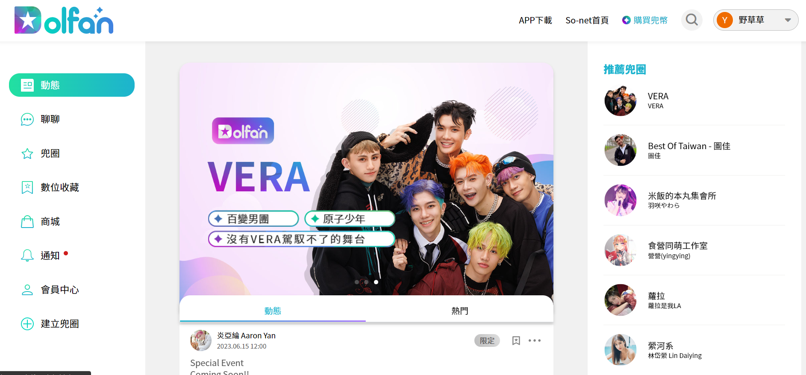

經歷
< Education & Experience >
關於
< About >

| Language | 語言 |
|---|
| Interests | 興趣 |

哲學 
戲劇 
音樂 |
Kayla
在有限裡追求無限
2020 / 11 轉職前端工程師，進入哲煜科技， 期間幸運地經歷過中大型規模專案，面對過各種棘手問題， 擁有獨立建構產品的能力，也能與團隊進行協作。 曾擔任專案負責人 相信成為優秀的工程師，是集技術與指導於一身。 為朝全端工程師的目標邁進， 透過網路資源學習 Java、Spring Boot、資料庫， 希望能獲得面試機會，與公司一起成長。 面對 AI 強勢來襲，學習方式也與時俱進， 追求新技術的同時，也不忘深挖構造下的底層， 在技術迭代快速的時代裡，找到從容的節奏順應洪流。 待業期間除研讀技術以外，也接觸哲學， 認為軟體世界與人類世界相似， 在技術的深海裡尋求與現實對應的關係， 透過不斷的反思，發現意料之外的連結是有趣的。 相信這些經驗和學習將使我成為一個有價值的軟體工程師。
Language
| 語言
Interests | 興趣
哲學
戲劇
音樂
Kayla
在有限裡追求無限
2020 / 11 轉職前端工程師，進入哲煜科技， 期間幸運地經歷過中大型規模專案，面對過各種棘手問題， 擁有獨立建構產品的能力，也能與團隊進行協作。 曾擔任專案負責人，帶過新人， 相信成為優秀的工程師，是集技術與指導於一身。 為朝全端工程師的目標邁進， 透過網路資源學習 Java、Spring Boot、資料庫， 希望能獲得面試機會，與公司一起成長。 面對 AI 強勢來襲，學習方式也與時俱進， 追求新技術的同時，也不忘深挖構造下的底層， 在技術迭代快速的時代裡，找到從容的節奏順應洪流。 待業期間除研讀技術以外，也接觸哲學， 認為軟體世界與人類世界相似， 在技術的深海裡尋求與現實對應的關係， 透過不斷的反思，發現意料之外的連結是有趣的。 相信這些經驗和學習將使我成為一個有價值的軟體工程師。
技能
< Skills & Software >
Spring Boot / Java
- 簡易 Spring Boot 的電子商務網站，提供商品展示、購物車和訂單管理等功能。
- Spring MVC
- Spring Data JPA
- JUnit
MySQL / MongoDB
- 了解資料庫基礎概念，如資料庫結構、表設計和正規化等。
- 熟悉常用的SQL查詢語句，能夠進行資料篩選、排序和表聯結等操作。
- 掌握MongoDB查詢語言，能夠進行基本查詢操作。
Nuxt.js / Vue.js / JavaScript
- 使用 Nuxt.js 及 Vue.js 開發和維護公司的前端應用程式。
- 具備中型專案分工架構及注重考量其擴展性。
- 優化前端性能，減少頁面加載時間。
專案
< Project >

Dolfan 兜粉追星平台
直播串流
amazon-ivs-video
聊天室 socket
圖表統計 echarts
一般登入、Google 及
Facebook 登入
新手導覽互動 introjs
其餘眾多頁面切版及串接 API
Nuxt
Streaming
Socket
Chart
Guide